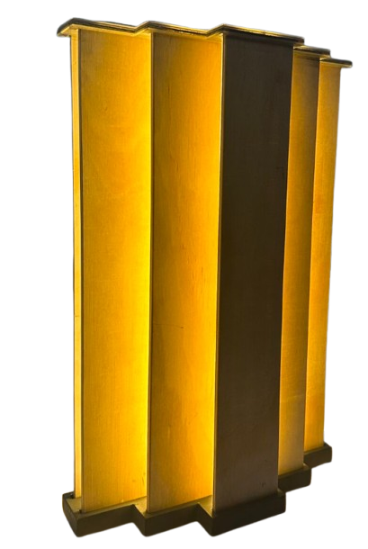

About the Project: GRAVSTEN

As a digital media and communications assistant at the CLTC, I helped photograph the final prototypes for Professor Jae Suk's lighting design classes. These projects were especially exciting to capture as it was my first time analyzing the cool intricacies behind how light is formed and its implications on our behavioral state. Here are some of my favs that captured my eyes.